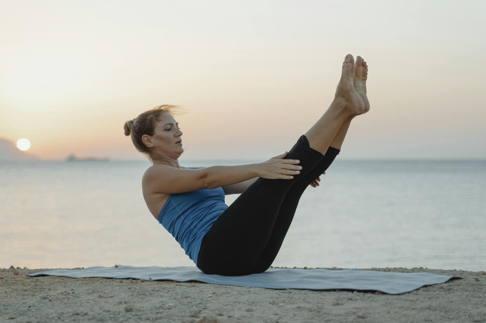

What Are Quick Stress Relief Routines?
Key takeaways
- In today's fast-paced world, stress can feel like a constant companion.
- But what if you could find moments of calm amidst the chaos?
- Focus on: Feeling Overwhelmed? Find Your Calm in Minutes.

Feeling Overwhelmed? Find Your Calm in Minutes
In today's fast-paced world, stress can feel like a constant companion. But what if you could find moments of calm amidst the chaos? You don't need hours of meditation or a silent retreat to make a difference. Incorporating simple, quick routines into your day can significantly lower your overall stress load and boost your well-being. Let's explore some practical ways to find your peace, starting today.
Morning Rituals for a Calmer Start
Your morning sets the tone for the entire day. Instead of immediately checking emails or scrolling through social media, try a few minutes of intentional activity.
Mindful Breathing
Even 60 seconds of deep, conscious breathing can make a difference. Inhale slowly through your nose, feeling your belly expand, and exhale slowly through your mouth. Repeat this a few times. This simple act can help regulate your nervous system and bring you back to the present moment.
Gentle Stretching
Wake up your body with a few simple stretches. Reach your arms overhead, touch your toes (or as close as you can get!), and do some gentle neck rolls. This can release physical tension that often accompanies stress. You can find great stretches for desk workers online.
Hydration and a Moment of Gratitude
Start your day with a glass of water. As you drink, think of one thing you're grateful for. It could be as simple as a warm cup of coffee or a sunny day. This small practice can shift your perspective.
Midday Resets to Recharge
The afternoon slump is real, and stress can exacerbate it. These quick resets can help you power through.
A Short Walk Outdoors
If possible, step outside for 5-10 minutes. Fresh air and a change of scenery can do wonders. Focus on your surroundings – the trees, the sky, the sounds. This is a fantastic way to practice mindfulness and get your blood flowing. Need ideas? Check out these tips for incorporating walking into your busy schedule.
Listen to Calming Music or a Podcast
Put on headphones and listen to a few of your favorite calming songs or an uplifting podcast episode. This can be a great way to mentally detach from stressors for a brief period. Many people find guided meditations helpful during this time.
Quick Hydration Break
Sometimes, dehydration can mimic stress symptoms. Take a moment to refill your water bottle and sip it mindfully. Consider adding a slice of lemon or cucumber for a refreshing twist.
Evening Wind-Downs for Better Rest
Your evening routine is crucial for preparing your mind and body for sleep, which is vital for stress management. Learn more about the importance of sleep hygiene.
Digital Detox
An hour before bed, put away your phone, tablet, and laptop. The blue light emitted from screens can interfere with melatonin production, making it harder to fall asleep. Instead, pick up a book or listen to a podcast.
Journaling Your Thoughts
Jot down any worries or thoughts that are keeping you up. Getting them out of your head and onto paper can provide a sense of release. You don't need to write an essay; bullet points are fine. For instance, Sarah, a marketing manager, finds that writing down her top three tasks for the next day before bed helps her brain switch off from work worries.
A Warm Bath or Shower
A warm bath or shower can relax your muscles and signal to your body that it's time to wind down. Add some Epsom salts or a few drops of lavender essential oil for an extra calming effect. Discover natural ways to relax.
Your Daily Stress Relief Checklist
- Morning: 1 minute of deep breathing.
- Morning: 1 thing you're grateful for.
- Midday: 5-10 minute walk outdoors (if possible).
- Evening: 1 hour digital detox before bed.
- Evening: Jot down 1-3 worries or tasks for tomorrow.
Common Mistakes to Avoid
Relying on only one method: Stress is complex, and a multi-faceted approach is often most effective. Don't get discouraged if one technique doesn't work perfectly; try another.
Skipping routines when busy: Ironically, these quick routines are most important when you feel you have the least time. Even 30 seconds can help.
Expecting instant, drastic results: Consistency is key. These are daily habits that build resilience over time.
Educational only — not medical advice.
Frequently Asked Questions
How long does it take to see results from these routines?
While you might feel immediate calm after a single session, building resilience to stress takes consistent practice. Many people notice a difference in their overall stress levels within a few weeks of regular application.
Can I do these routines if I have very little time?
Absolutely. The beauty of these routines is their brevity. Even 60 seconds of deep breathing or a 5-minute mindful walk can provide a valuable reset.
Are there any specific times of day that are better for these routines?
While any time is beneficial, establishing consistent times (like right after waking, during a lunch break, or before bed) can help make them a habit. The key is to integrate them into your existing day.
What if I can't go outside for a walk?
If an outdoor walk isn't feasible, try walking around your office or home. Even a short indoor walk with some gentle stretching can provide similar benefits. Alternatively, focus on a longer guided meditation or listening to calming music.
Can these routines replace professional help for severe stress or anxiety?
These routines are excellent tools for managing everyday stress and building resilience. However, they are not a substitute for professional medical advice or treatment for severe stress, anxiety disorders, or other mental health conditions. If you are struggling, please consult a healthcare professional.
Embrace the Small Moments
Lowering your stress load doesn't require a major life overhaul. By weaving these small, intentional routines into your daily fabric, you can cultivate a greater sense of calm, improve your focus, and enhance your overall well-being. Start with one or two that resonate with you, and build from there. Your mind and body will thank you.
More in mental-wellness

What Daily Routines Eases Stress Most Effectively?
Discover simple daily routines to lower your stress load and boost your well-being. Practical tips for a calmer, more balanced life.
Read more →
Feeling Stressed? Build Emotional Strength
Learn practical ways to manage stress and build emotional resilience for a calmer, stronger you. Discover simple techniques you can use toda
Read more →Related posts
What Daily Routines Eases Stress Most Effectively?
Discover simple daily routines to lower your stress load and boost your well-being. Practical tips for a calmer, more balanced life.
Read more →Feeling Stressed? Build Emotional Strength
Learn practical ways to manage stress and build emotional resilience for a calmer, stronger you. Discover simple techniques you can use toda
Read more →
Can Daily Habits Lower Your Stress Levels?
Discover practical daily routines and simple habits to effectively reduce your stress load and improve overall well-being. Learn actionable
Read more →